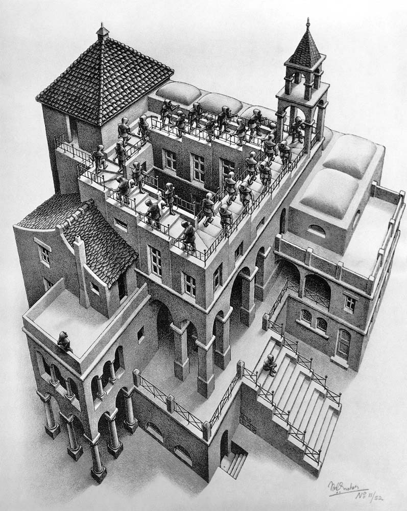

Research interests
My interests lie at the intersection of Computer Science, Physics, and Mathematics. Broadly speaking, my research addresses interrelated questions on quantum foundations, quantum computer science, and the mathematics of quantum theory, with an emphasis on logical, structural, and compositional aspects.
It aims to achieve a general, structural understanding of the characteristically non-classical features of quantum systems, which sheds light on their potential – and limitations – as informatic or computational resources, thus delineating the scope of quantum advantage. An eventual hope is that such a foundational perspective can guide the development of systematic, modular methods for utilising quantum resources.
My research employs viewpoints and tools from a range of areas in mathematics and theoretical computer science. These include category theory (sheaves, monoidal categories, closed categories, monads and comonads, …), logic and related algebraic structures, probability theory, algebraic topology, and operator algebras.
In particular, most of my research to date has focused on the study of non-localilty and contextuality, phenomena that set quantum theory apart from classical physical theories and which have been linked to quantum informatic advantage. In contrast with the classical case, not all observables of a quantum system can be measured and be assigned values simultaneously. Contexts of jointly measurable observables provide multiple partial, classical perspectives on a quantum system. But while any two of these contexts fit nicely together, they cannot all be pasted consistently into a global perspective. This gap between local consistency and global inconsistency is what constitutes contextuality, a concept that finds an elegant expression in the language of sheaf theory.